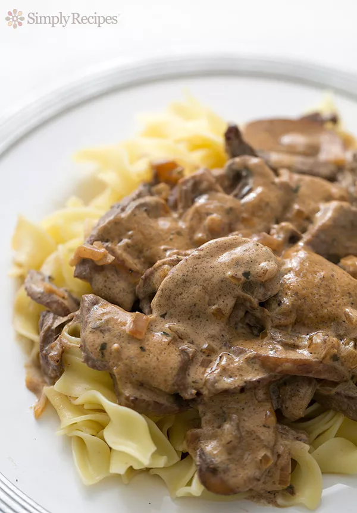
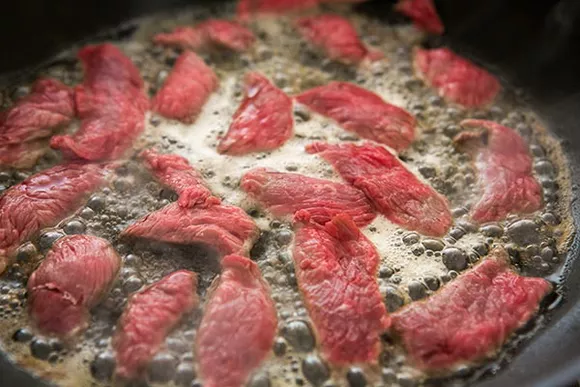
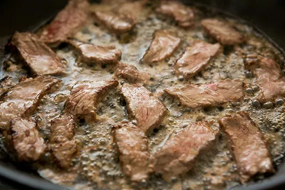
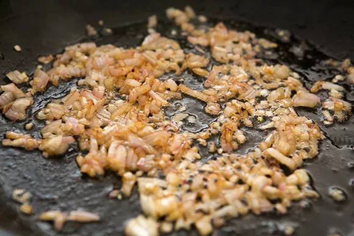
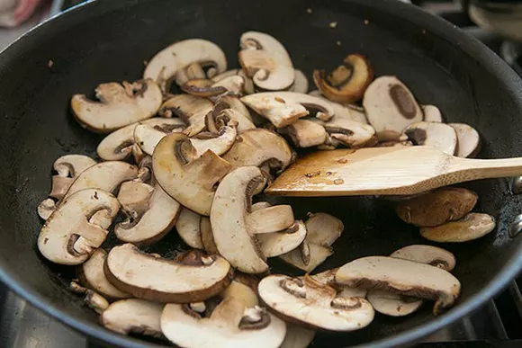
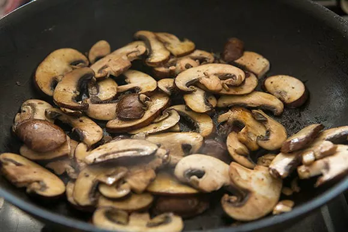
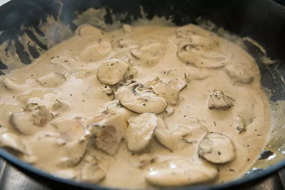
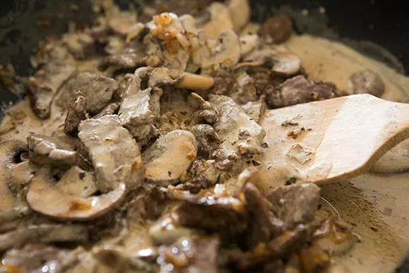

Beef Stroganoff

Description
Oh, Beef Stroganoff—the ultimate comfort food! To make it, we sauté tender strips of beef and mushrooms in butter, then swirl with sour cream to make a creamy sauce, and serve over noodles, rice, or fries.
Ingredients
- 5 tablespoons butter, divided
- Salt to taste
- Freshly ground black pepper to taste
- 1 pound top sirloin or tenderloin, cut thinly into 1-inch by 2 1/2-inch strips
- 1/3 cup chopped shallots or onions
- 8 ounces cremini mushrooms, sliced
- 1/8 teaspoon nutmeg
- 1/2 teaspoon dry tarragon or 2 teaspoons chopped fresh tarragon
- 1 cup sour cream (full fat), at room temperature
Steps
- Brown the strips of beef in butter:
Melt 3 tablespoons of butter in a large skillet on medium heat. Increase the heat to high/med-high. Add the strips of beef in a single layer with space between the strips. You want to cook the beef quickly, browning on each side, so the temp needs to be high enough to brown the beef, but not so high as to burn the butter. You may need to work in batches.
While cooking the beef, sprinkle generously with salt and pepper. When both sides are browned, remove the beef to a bowl and set aside.


-
Sauté the shallots:
In the same pan, reduce the heat to medium and add the shallots. Cook the shallots for a minute or two, allowing them to soak up any meat drippings. Remove the shallots to the same bowl as the meat and set aside.

- Sauté the mushrooms, then season:
In the same pan, melt another 2 tablespoons of butter. Increase heat to medium high and add the mushrooms. Cook, stirring occasionally for about 4 minutes.
While cooking, sprinkle the nutmeg and the tarragon on the mushrooms.


- Add the sour cream, beef, and shallots:
Reduce the heat to low and add the sour cream to the mushrooms. You may want to add a tablespoon or two of water or stock to thin the sauce (or not).
CMix in the sour cream thoroughly. Do not let it come to a simmer or boil or the sour cream may curdle. Stir in the beef and shallots.
Add salt and pepper to taste. Note that you will likely need more salt than you expect. Taste, and if it needs salt, add 1/2 teaspoon or more.


-
Serve:
Serve immediately over egg noodles, fettuccine, mashed potatoes, or rice. (Potatoes, rice, and gluten-free pasta are gluten-free options.)